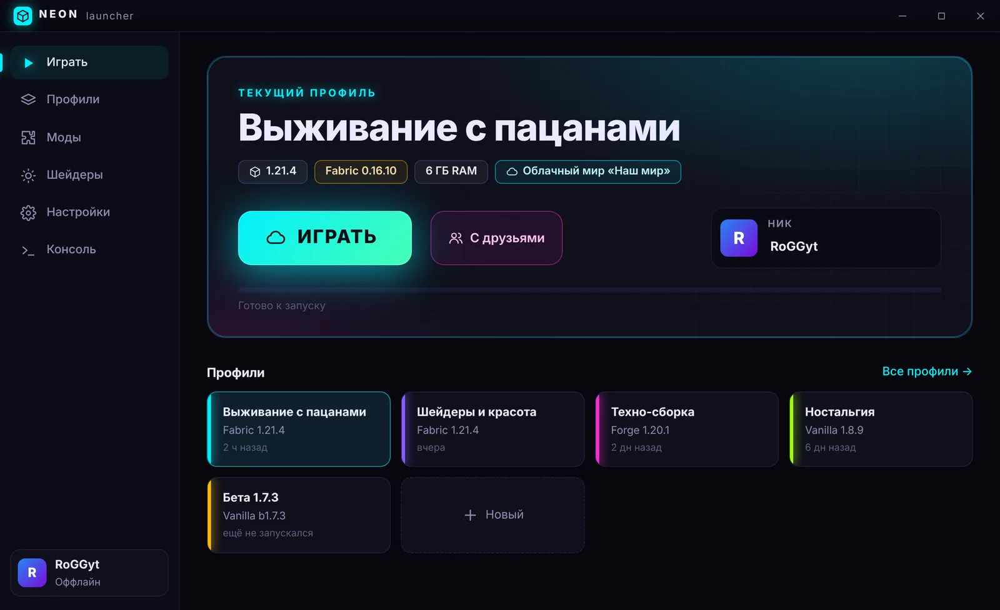
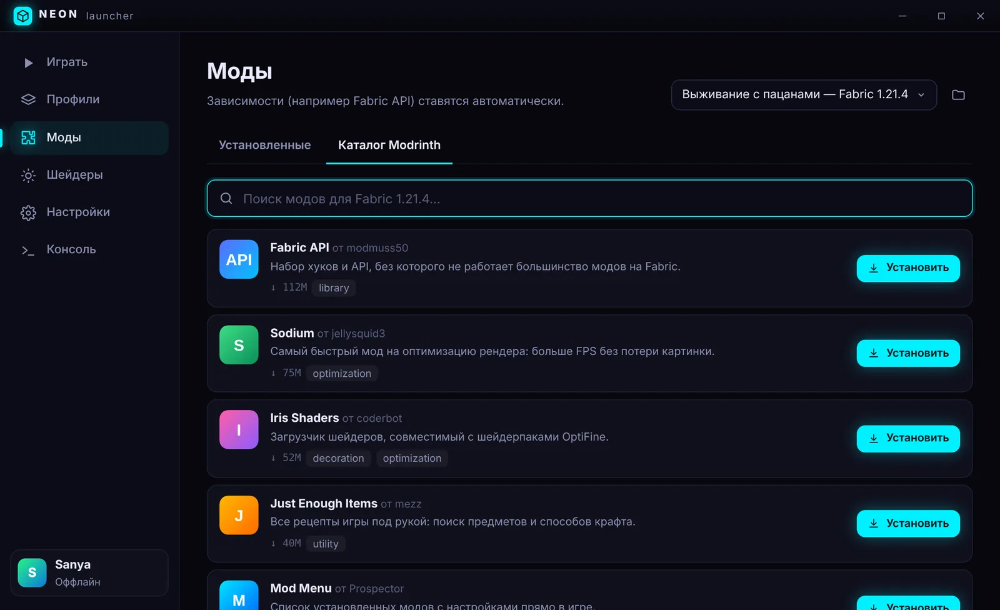
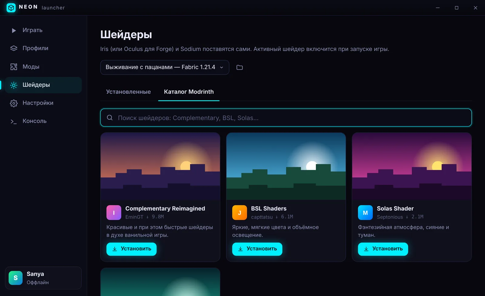
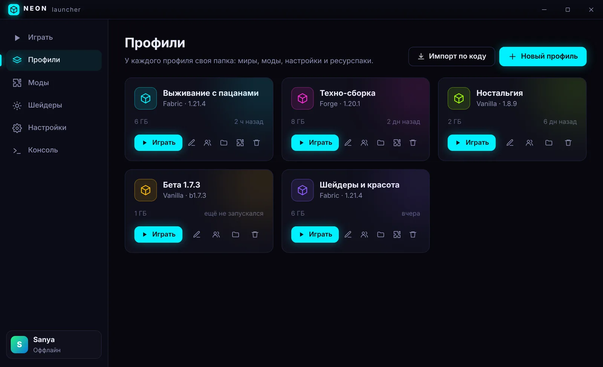
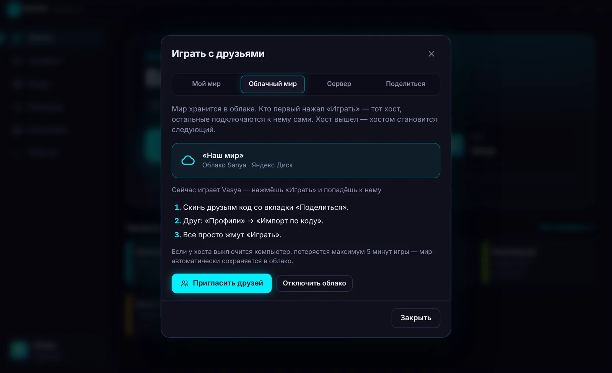

Майнкрафт с друзьями без возни
Любая версия, Fabric и Forge, моды и шейдеры в пару кликов. А общий мир живёт в облаке: друзья заходят в него, даже когда тебя нет онлайн.

Всё, что обычно делаешь руками, лаунчер делает сам
Выбираешь, во что играть, остальное он скачает, поставит и настроит.




Общий мир, который не ждёт хозяина
Мир лежит на Яндекс Диске. Кто первый нажал «Играть», тот и хост, остальные подключаются к нему сами. Попробуй, что будет, если хост уйдёт.
Нажимай по очереди:
Как начать
Скачай установщик
Один файл, около 100 МБ. Дальше лаунчер обновляется сам.
Впиши ник и выбери версию
Или вставь код сборки от друга: версия и моды поставятся сами.
Жми «Играть»
Первый запуск качает игру пару минут, следующие стартуют сразу.
Вопросы
Windows пишет «Windows защитила ваш компьютер». Это опасно?
Так Windows реагирует на любую программу без платной цифровой подписи. Нажми «Подробнее», потом «Выполнить в любом случае». Весь код лаунчера открыт на GitHub, а каждый установщик собирается там же автоматически.
Нужен ли аккаунт?
Для одиночной игры и игры с друзьями хватит ника. Если хочешь, чтобы в игре был виден твой скин, войди через бесплатный аккаунт Ely.by. На сервера с проверкой лицензии Microsoft пускают только с купленной игрой.
Как работает облачный мир и сколько места он займёт?
Мир хранится на Яндекс Диске того, кто его создал, в папке приложения. Бесплатных 5 ГБ хватает надолго: обычный мир весит от 50 до 500 МБ. После первой загрузки качаются только изменения. Нужен Fabric и версия 1.20 или новее.
Мои миры и моды не потеряются при обновлении?
Нет. Обновление меняет только сам лаунчер, папка с играми не трогается.
Как полностью удалить лаунчер?
Через «Приложения» в Windows. Установщик предложит стереть и всё скачанное: версии игры, Java, моды, шейдеры и профили. В системе ничего не останется.
Есть версия для Mac или Linux?
Пока только Windows. Лаунчер написан на Electron, так что сборки под другие системы появятся.